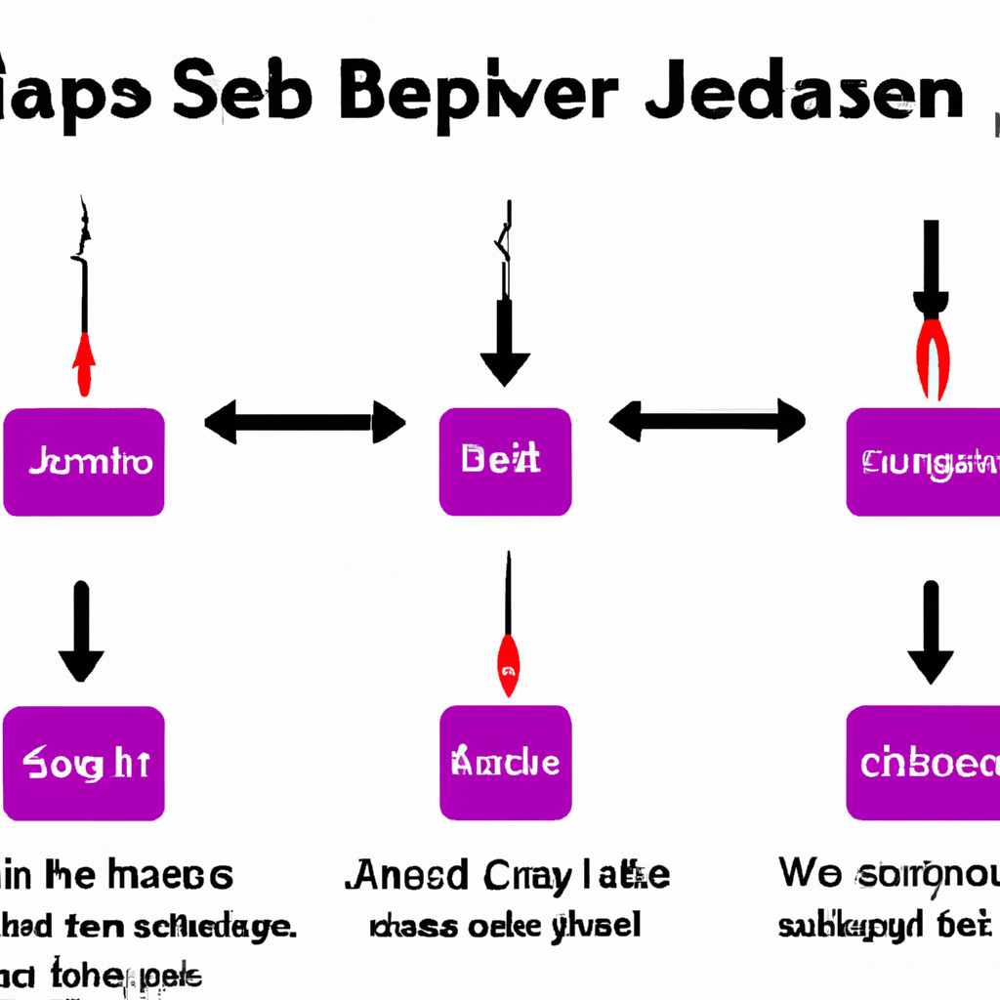

New JavaScript Framework Requires Blood Sacrifice for Peak Performance
In a bizarre twist to the ever-evolving world of web development, a new JavaScript framework, known as Hemocode, has been released to the public. What sets Hemocode apart from the myriad of other JavaScript frameworks is its requirement for a blood sacrifice to achieve peak performance.
What is Hemocode?
Hemocode is a cutting-edge JavaScript framework designed to optimize web application performance by utilizing the power of the user's blood. While this may sound like a dark joke, the developers behind Hemocode claim that the framework harnesses the bio-energy from blood to create a more efficient and faster web application.
How Does it Work?
To use Hemocode, developers need to integrate the framework into their web applications. Once integrated, the framework prompts users to perform a blood sacrifice through a peripheral device connected to their computer. The device, called Hemocollector, extracts a small amount of blood from the user, which is then converted into bio-energy. This energy is utilized by the framework to optimize the web application's performance.
Performance Improvements and Concerns
According to the creators of Hemocode, the performance improvements are significant. They claim that web applications using Hemocode are up to 66% faster than those using conventional JavaScript frameworks. However, the requirement for a blood sacrifice raises several ethical and legal concerns. Many have criticized the framework for exploiting users' bodies and invading their privacy. Additionally, there are concerns about the potential health risks associated with continuous blood extraction.
Will Hemocode Become the New Standard?
It remains to be seen whether Hemocode will gain widespread acceptance in the web development community. While the performance improvements are impressive, the ethical and legal concerns surrounding the framework may prevent it from becoming mainstream. However, the concept of harnessing bio-energy for computing purposes is intriguing, and we may see similar